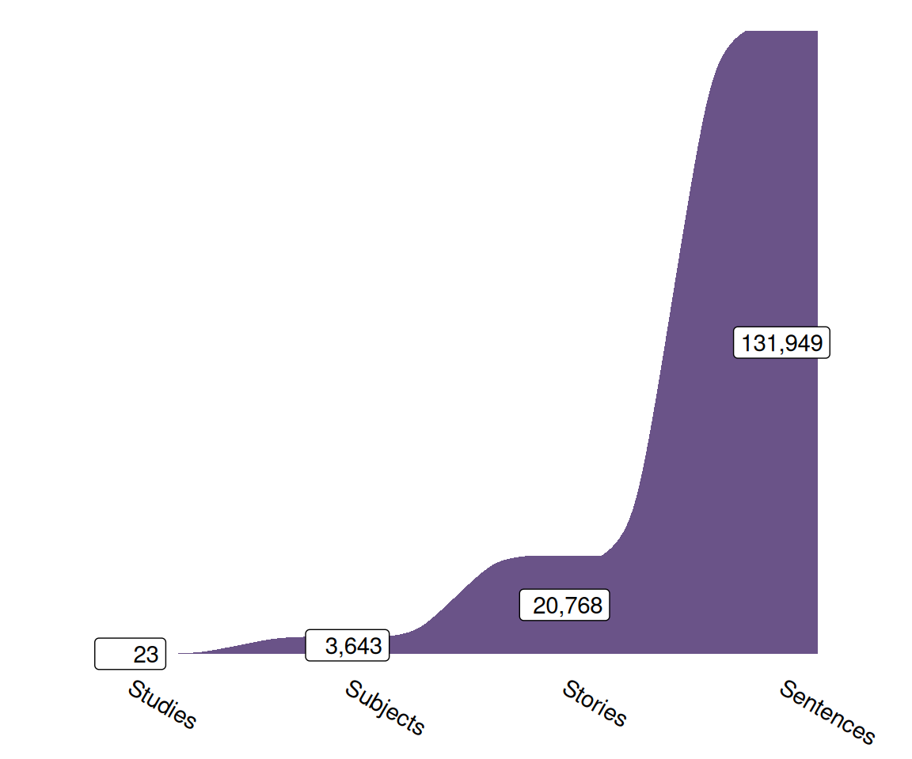
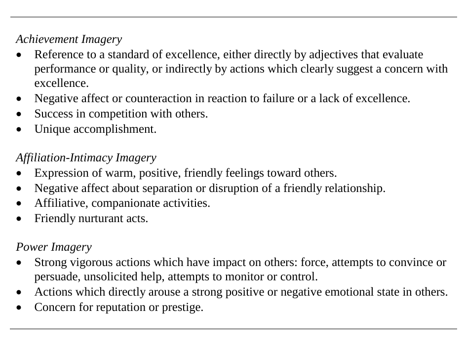
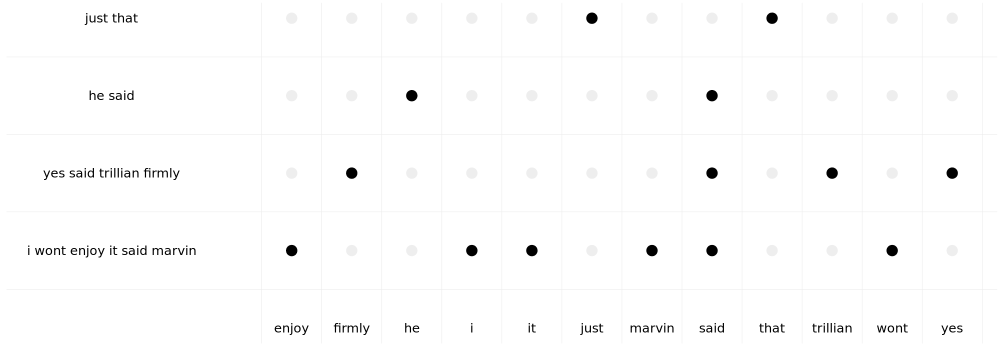
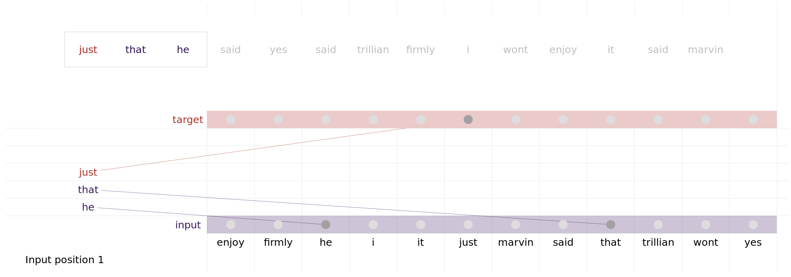
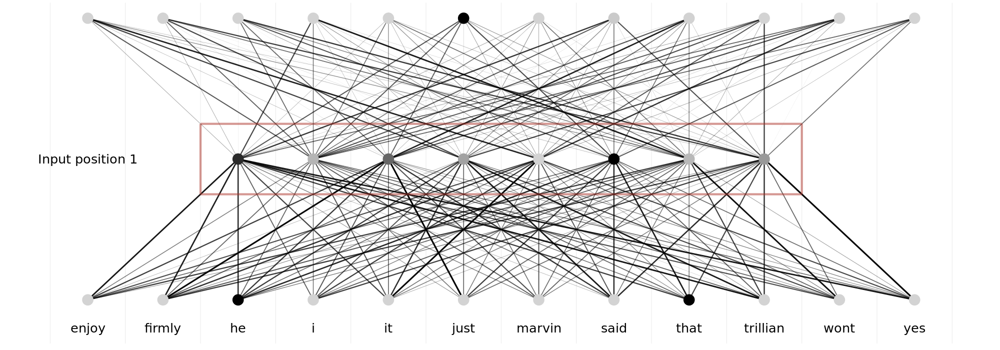
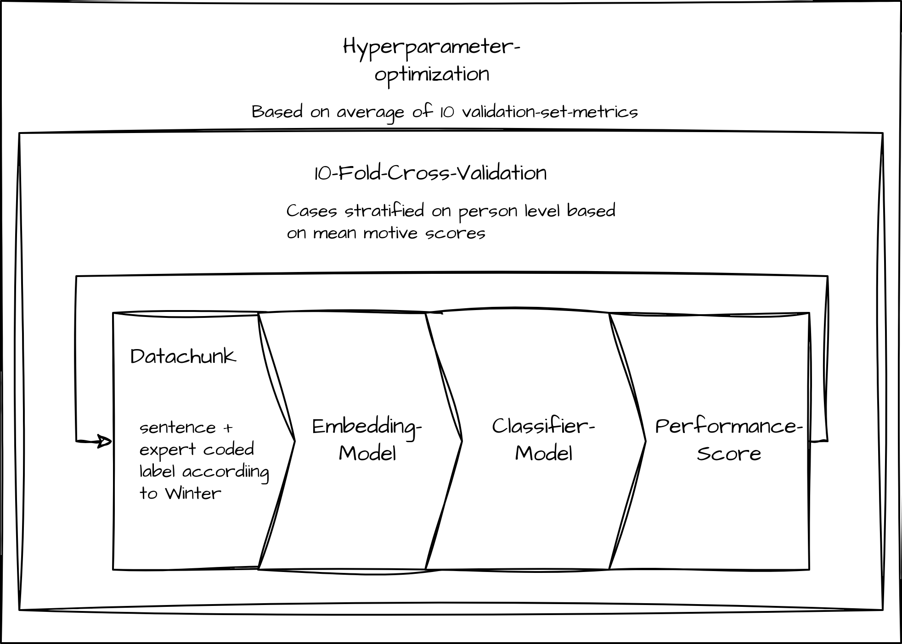
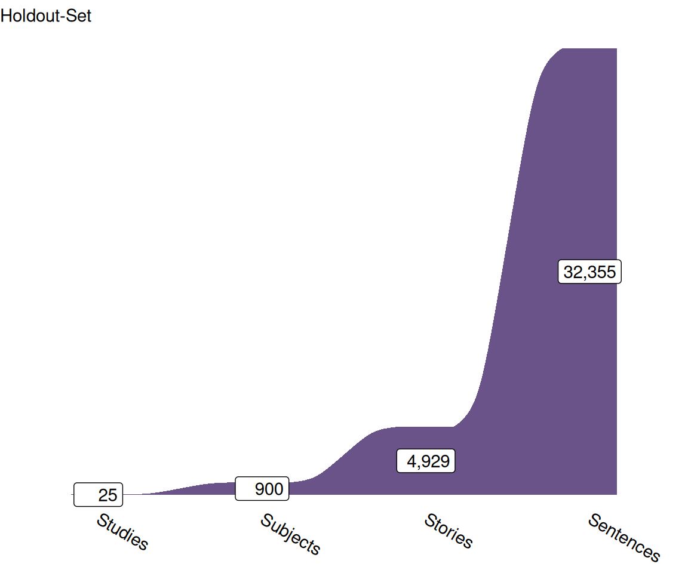
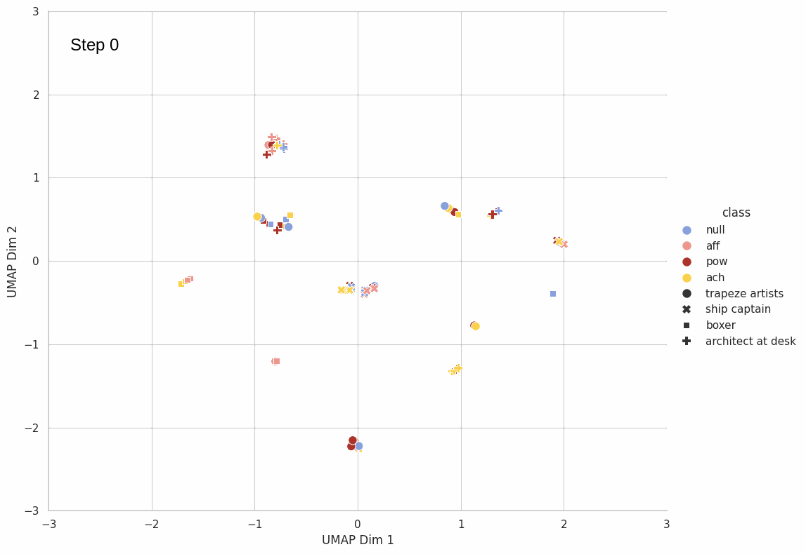
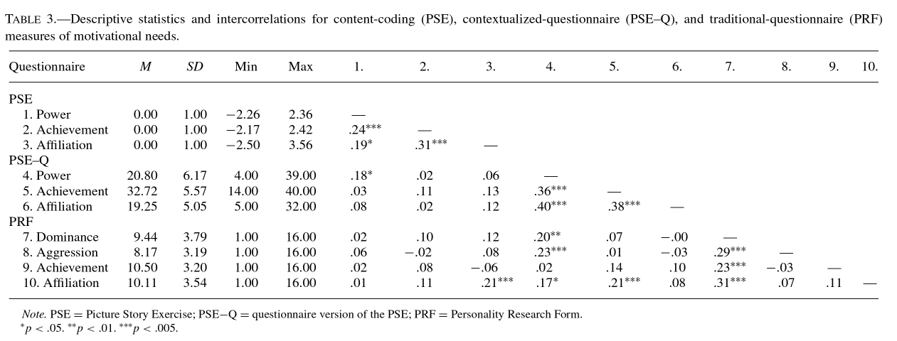

The Automatic Motive Coder:
Towards a Tool for the Efficient Assessment of Implicit Motives
Max Brede, Felix Schönbrodt, Birk Hagemeyer and Veronika Lerche
Background
Implicit Motives
Implicit Motives are unconscious, behaviour-guiding, motivational dispositions that underlie and influence an individual’s actions and decisions (Schultheiss, 2008).
Implicit Motives are typically measured using (semi-) projective measures, i.e., the Picture Story Exercises.
Schultheiss et al. (2009) showed that correlations between Implicit Motives and Explicit Motives (i.e. motives measured with questionnaires) were “small and mostly nonsignificant”.
Measurement of Implicit Motives - PSE
Two months ago, 40-year-old Frank received a good offer from New York. In discussion with his family, he accepted the offer and is now sitting in his office in New York. Like every morning, he reads the latest news in the daily newspaper. The picture of his family has a place of honor on his desk and is always at hand so that he can take a closer look at it. He misses his family as he can’t fly back home until Christmas. In the 4 weeks so far, the time difference has been particularly difficult for him, as work and the different times have made it difficult to make contact. He is already looking forward to seeing his wife and children again.
Winter Coding-Manual
Source: Winter (1991b)
Measurement of Implicit Motives - PSE
Two months ago, 40-year-old Frank received a good offer from New York. In discussion with his family, he accepted the offer and is now sitting in his office in New York. Like every morning, he reads the latest news in the daily newspaper. The picture of his family has a place of honor on his desk and is always at hand so that he can take a closer look at it. He misses his family as he can’t fly back home until Christmas. In the 4 weeks so far, the time difference has been particularly difficult for him, as work and the different times have made it difficult to make contact. He is already looking forward to seeing his wife and children again.
The Automatic Motive Coder 🤖
Dataset
Schönbrodt et al. (2021) published a database of
- 131,949 sentences from
- 20,768 stories written by
- 3,643 participants in
- 23 studies
Each coded by experts based on the Winter Manual (Winter, 1991a).
Automatic Motive Coder 🤖
Bag Of Words (BOW)
BOW-representation of sentences.
Automatic Motive Coder 🤖
Embedding-example: Continuous BOW (CBOW)
CBOW-representation of corpus.
Automatic Motive Coder 🤖
fasttext1

Automatic Motive Coder 🤖
(L)LM -Embeddings
Model using CBOW-Method to predict missing word.
Tested 🤖-Architectures
“Traditional” BOW/Embedding-Classifier-Stack
LoRA-Finetuning of small LM (Hu et al., 2021)
Embedding - Classifier-Stack
Illustration of Classifier-Stack
LoRA
- Finetuning of small LMs (Phi-3-mini-4k(Unsloth/Phi-3-mini-4k-instruct \(\cdot\) Hugging Face, n.d.)/gemma-2b(Google/Gemma-2b \(\cdot\) Hugging Face, 2024)) (partly) based on the following prompt:
- **Achievement**: Label as 'ach' if the sentence suggests goals related to personal success, overcoming
challenges, or mastering skills.
- **Affiliation**: Label as 'aff' if the sentence emphasizes relationships, emotional connections,
or social belonging.
- **Power**: Label as 'pow' if the sentence implies influencing, controlling, or impacting others, or showcases
a desire for authority or prestige.
- **None**: Use 'null' if the sentence does not clearly align with the above categories or lacks sufficient context
to determine a specific motive.Validation Metrics
Procedure as described in Schönbrodt et al. (2021):
Summation of Motive score (1/0-coded) and word-count per subject
Robust regression of motive score on word-count / 1,000
Extraction of residuals as corrected motive score
Pearson-Correlation of expert coded motive scores and model coded scores

Results
German Texts
Motive | Best BOW-Stack | Best Embedding-Stack1 | LoRA-Model2 | Nilsson et al. 2024 |
|---|---|---|---|---|
Achievement | 0.66 | 0.66 | 0.67 | |
Affiliation | 0.79 | 0.78 | 0.77 | |
Power | 0.72 | 0.68 | 0.69 | |
None | 0.90 | 0.92 | ||
Mean | 0.71 | 0.70 | ||
1Mixtral-8x7B-Instruct-v0.1 with MLP-Classifier | ||||
2gemma-2b | ||||
Translated to English
Motive | Best BOW-Stack | Best Embedding-Stack1 | LoRA-Model2 | Nilsson et al. 2024 |
|---|---|---|---|---|
Achievement | 0.58 | 0.66 | 0.64 | |
Affiliation | 0.71 | 0.75 | 0.73 | |
Power | 0.57 | 0.66 | 0.62 | |
None | 0.88 | 0.92 | 0.93 | |
Mean | 0.62 | 0.69 | 0.66 | |
1Mixtral-8x7B-Instruct-v0.1 with MLP-Classifier | ||||
2gemma-2b | ||||
Example
Comparison between model results and expert coding
Text | Expert | Model1 | |||
|---|---|---|---|---|---|
Coding | Achievement | Affiliation | None | Power | |
Two months ago, 40-year-old Frank received a good offer from New York. | None | 0.07 | 0.06 | 0.86 | 0.02 |
In discussion with his family, he accepted the offer and is now sitting in his office in New York. | None | 0.09 | 0.12 | 0.75 | 0.04 |
Like every morning, he reads the latest news in the daily newspaper. | None | 0.02 | 0.03 | 0.93 | 0.02 |
The picture of his family has a place of honor on his desk and is always at hand so that he can take a closer look at it. | Affiliation | 0.23 | 0.60 | 0.15 | 0.02 |
He misses his family as he can't fly back home until Christmas. | Affiliation | 0.05 | 0.80 | 0.14 | 0.01 |
In the 4 weeks so far, the time difference has been particularly difficult for him, as work and the different times have made it difficult to make contact. | Affiliation | 0.02 | 0.88 | 0.10 | 0.01 |
He is already looking forward to seeing his wife and children again. | Affiliation | 0.10 | 0.66 | 0.23 | 0.01 |
1Mixtral-8x7B-Instruct-v0.1 with MLP-Classifier | |||||
Outlook
Further optimization
Test on other languages
Test of the general pipeline on other motive measures
Publication of python-Code / R-Wrapper for convenient usage
Implementation of “SetFit” (Tunstall et al., 2022)
SetFit
UMAP-Projected embeddings of model over setfit-embedding-training
SetFit
UMAP-Projected embeddings of model over setfit-embedding-training
Thank You!
Contact me:
| : | brede@psychologie.uni-kiel.de |
| : | MBrede |
| : | max-bre.de |
| : | @mbrede@fediscience.org |
References
Devlin, J., Chang, M.-W., Lee, K., & Toutanova, K. (2019). BERT: Pre-training of Deep Bidirectional Transformers for Language Understanding. http://arxiv.org/abs/1810.04805. https://doi.org/10.48550/arXiv.1810.04805
Falkner, S., Klein, A., & Hutter, F. (2018). BOHB: Robust and Efficient Hyperparameter Optimization at Scale. http://arxiv.org/abs/1807.01774. https://doi.org/10.48550/arXiv.1807.01774
Google/gemma-2b \(\cdot\) Hugging Face. (2024). https://huggingface.co/google/gemma-2b.
Hu, E. J., Shen, Y., Wallis, P., Allen-Zhu, Z., Li, Y., Wang, S., Wang, L., & Chen, W. (2021). LoRA: Low-Rank Adaptation of Large Language Models (No. arXiv:2106.09685). arXiv. https://doi.org/10.48550/arXiv.2106.09685
Jiang, T., Huang, S., Luan, Z., Wang, D., & Zhuang, F. (2023). Scaling Sentence Embeddings with Large Language Models (No. arXiv:2307.16645). arXiv. https://doi.org/10.48550/arXiv.2307.16645
Lindauer, M., Eggensperger, K., Feurer, M., Biedenkapp, A., Deng, D., Benjamins, C., Ruhopf, T., Sass, R., & Hutter, F. (2022). SMAC3: A Versatile Bayesian Optimization Package for Hyperparameter Optimization. http://arxiv.org/abs/2109.09831. https://doi.org/10.48550/arXiv.2109.09831
Mistralai/Mixtral-8x7B-Instruct-v0.1 \(\cdot\) Hugging Face. (n.d.). https://huggingface.co/mistralai/Mixtral-8x7B-Instruct-v0.1.
Nilsson, A., Runge, J. M., Kjell, O. N. E., Soni, N., Ganesan, A. V., & Nilsson, C. V. (2024). Automatic implicit motives codings are as accurate as humans’, cheaper, and 99% faster. https://doi.org/10.31234/osf.io/7s6jp
Ramsay, J. E. (2014). Refining the picture story exercise: Towards a better understanding of hope, fear, and the achievement motive [PhD thesis].
Reimers, N., & Gurevych, I. (2019). Sentence-BERT: Sentence Embeddings using Siamese BERT-Networks (No. arXiv:1908.10084). arXiv. https://arxiv.org/abs/1908.10084
Schönbrodt, F. D., Hagemeyer, B., Brandstätter, V., Czikmantori, T., Gröpel, P., Hennecke, M., Israel, L. S. F., Janson, K. T., Kemper, N., Köllner, M. G., Kopp, P. M., Mojzisch, A., Müller-Hotop, R., Prüfer, J., Quirin, M., Scheidemann, B., Schiestel, L., Schulz-Hardt, S., Sust, L. N. N., … Schultheiss, O. C. (2021). Measuring Implicit Motives with the Picture Story Exercise (PSE): Databases of Expert-Coded German Stories, Pictures, and Updated Picture Norms. Journal of Personality Assessment, 103(3), 392–405. https://doi.org/10.1080/00223891.2020.1726936
Schultheiss, O. C. (2008). Implicit motives. In Handbook of personality: Theory and research, 3rd ed (pp. 603–633). The Guilford Press.
Schultheiss, O. C., Yankova, D., Dirlikov, B., & Schad, D. J. (2009). Are Implicit and Explicit Motive Measures Statistically Independent? A Fair and Balanced Test Using the Picture Story Exercise and a Cue- and Response-Matched Questionnaire Measure. Journal of Personality Assessment, 91(1), 72–81. https://doi.org/10.1080/00223890802484456
Tunstall, L., Reimers, N., Jo, U. E. S., Bates, L., Korat, D., Wasserblat, M., & Pereg, O. (2022). Efficient Few-Shot Learning Without Prompts (No. arXiv:2209.11055). arXiv. https://arxiv.org/abs/2209.11055
Unsloth/Phi-3-mini-4k-instruct \(\cdot\) Hugging Face. (n.d.). https://huggingface.co/unsloth/Phi-3-mini-4k-instruct.
Winter, D. G. (1991a). Manual for scoring motive imagery in running text. Department of Psychology, University of Michigan.
Winter, D. G. (1991b). Measuring personality at a distance: Development of an integrated system for scoring motives in running text. In Perspectives in personality, Vol. 3: Part A: Self and emotion; Part B: Approaches to understanding lives (pp. 59–89). Jessica Kingsley Publishers.
Appendix A - Results Implicit/Explicit Motives
Correlations of measures of implicit and explicit motives
Appendix B - PSE
Example image used in the PSE
Appendix C - Embedding - Classifier-Stack
Embeddings:
- BOW +/- Stopwords
- TF-IDF +/- Stopwords
- (finetuned) BERT (Devlin et al., 2019)
- (finetuned) SBERT (Reimers & Gurevych, 2019)
- Mixtral-8x7B-Instruct-v0.1 (Mistralai/Mixtral-8x7B-Instruct-v0.1 \(\cdot\) Hugging Face, n.d.) with prompt oriented on Jiang et al. (2023)
Test-/Train-Split:
- 10-fold validation strategy + test on holdout set provided by Schönbrodt
Classifier-Models:
- sklearn: AdaBoost, Bagging, DecisionTree, Dummy, ETree, GP, HGB, KNN, Logistic, Naive_Bayes, NearestCentroid, Passive_Aggressive, Perceptron, QDA, RForest, Ridge, SVM
- PyTorch: MLP
- Specialized Modules: CatBoost, LightGBM, XGBoost
Hyperparameter-Optimization:
- Bayesian Optimization and Hyperband (BOHB; Falkner et al., 2018) implemented in SMAC3 (Lindauer et al., 2022)
Appendix D - LoRA-Prompt
Below is an instruction that describes a task, paired with an input that provides further context.
Write a response that appropriately completes the request.
## Instructions to the Language Model
Your task is to analyze a single sentence from a Picture Story Exercise (PSE) and determine which type of implicit
motive imagery it displays according to David Winter's categories: achievement, affiliation, power, or none.
### Categories Explained:
- **Achievement**: Label as 'ach' if the sentence suggests goals related to personal success, overcoming
challenges, or mastering skills.
- **Affiliation**: Label as 'aff' if the sentence emphasizes relationships, emotional connections,
or social belonging.
- **Power**: Label as 'pow' if the sentence implies influencing, controlling, or impacting others, or showcases
a desire for authority or prestige.
- **None**: Use 'null' if the sentence does not clearly align with the above categories or lacks sufficient context
to determine a specific motive.
### Input:
{text}
### Response:
{response}"""Appendix E - Validation Metrics
Procedure as described in Schönbrodt et al. (2021):
Summation of Motive score (1/0-coded) and word-count per subject
Robust regression of motive on wordcount / 1,000
Extraction of residuals as corrected Motive Score
Pearson-Correlation of Ground Truth and Model Coded Score
Procedure as used in Nilsson et al. (2024):
Summation of predicted motive probabilities and word-count per subject
Regression to predict square-rooted motives from word count per subject / 1,000
Extraction of residuals as corrected Motive Score
ICC of Ground Truth and Model Coded Score

Project funded by the DFG (LE 4379/2-1)